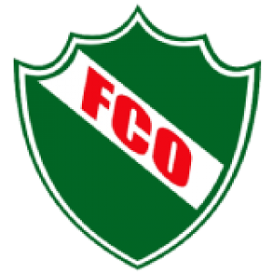

Bienvenidos!
Este sitio reúne información de los principales clubes deportivos de la ciudad de General Pico.
Podés navegar entre las páginas usando el menú superior o el mapa del sitio al pie.

Este sitio reúne información de los principales clubes deportivos de la ciudad de General Pico.
Podés navegar entre las páginas usando el menú superior o el mapa del sitio al pie.